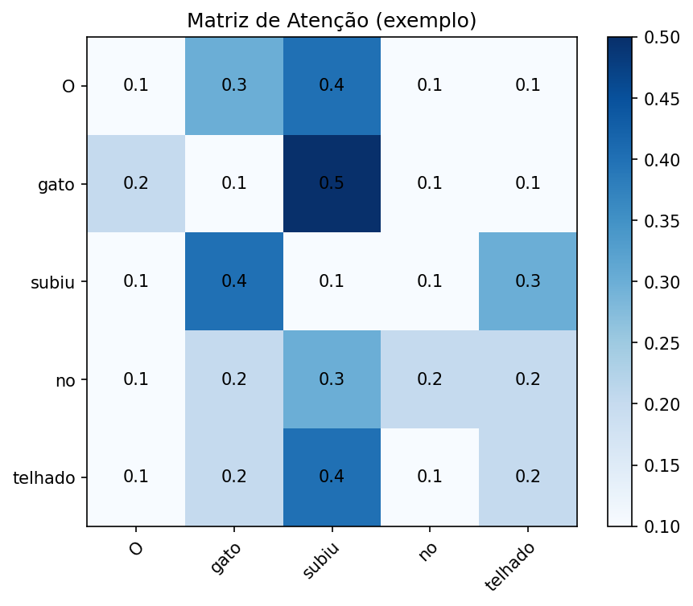
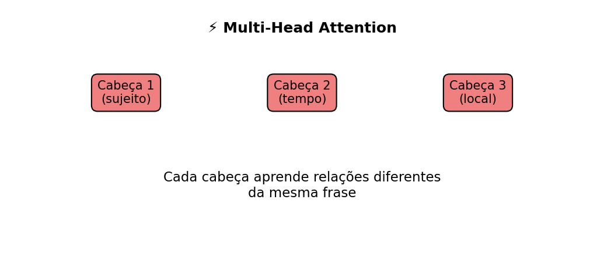

✨ Atenção em Transformers: Q, K, V e Multi-Head Attention
inteligência artificial
IA
Transformers
atenção
LLM
deep learning
NLP
Query
Key
Value
Multi-Head Attention
CPU
CUDA
GPU
PyTorch
TensorFlow
Softmax
Attention
Entenda em detalhes como funciona o mecanismo de atenção nos Transformers: Query, Key, Value, a fórmula matemática com Softmax e o conceito de Multi-Head Attention.
No post anterior vimos que o Transformer substituiu as RNNs pelo mecanismo de atenção, permitindo que o modelo olhe para todas as palavras de uma frase ao mesmo tempo.
Agora vamos detalhar como isso funciona internamente, usando três conceitos-chave: Query (Q), Key (K) e Value (V).
🔑 Query, Key e Value (Q, K, V)
Podemos imaginar o mecanismo de atenção como uma busca em biblioteca:
Query (Q): é a pergunta que fazemos.
Key (K): são as etiquetas que identificam os livros.
Value (V): é o conteúdo do livro.
👉 O modelo compara cada Query com todas as Keys para decidir quais Values são mais importantes para formar a saída.
Exemplo:
Frase: “O gato subiu no telhado.”
Query: palavra atual (“subiu”).
Keys: todas as palavras da frase.
Values: significados associados a cada palavra.
Resultado: atenção maior em “gato” (quem subiu) e em “telhado” (onde subiu).
🧩 Quiz — Q, K, V
Q1. No mecanismo de atenção, o papel da Query (Q) é:
✗Armazenar o significado das palavras.
✗Ser a etiqueta usada para comparar palavras.
✓Representar a “pergunta” que a rede faz para decidir relevância.
\(QK^T\): compara cada Query com todas as Keys (similaridade).
\(\sqrt{d_k}\): normaliza para evitar números grandes demais.
Softmax: transforma os resultados em probabilidades (pesos de atenção).
Multiplicação por \(V\): gera a combinação ponderada dos valores mais relevantes.
Dica💻 Implementação prática
Na prática, a equação da atenção não é escrita “à mão” toda vez.
O Softmax é uma função disponível em NumPy, PyTorch e TensorFlow.
Ex.: torch.nn.functional.softmax (PyTorch) ou tf.nn.softmax (TensorFlow).
O Attention aparece implementado em módulos prontos, como
torch.nn.MultiheadAttention (PyTorch),
tf.keras.layers.MultiHeadAttention (TensorFlow).
👉 Ou seja, a fórmula matemática é traduzida diretamente para funções de alto nível em Python, que por baixo dos panos usam C++ e CUDA para acelerar os cálculos em CPU/GPU.
Nota⚡ O que é CUDA?
CUDA (Compute Unified Device Architecture) é uma tecnologia criada pela NVIDIA que permite usar a GPU (placa de vídeo) não apenas para gráficos, mas também para cálculos matemáticos em paralelo.
👉 Por que isso importa para LLMs?
A fórmula da atenção envolve muitas multiplicações de matrizes grandes.
Enquanto a CPU faz poucas operações de cada vez, a GPU (via CUDA) pode rodar milhares em paralelo.
Resultado: treinar ou usar Transformers em GPU + CUDA é dezenas de vezes mais rápido que em CPU.
💡 Resumindo: CUDA é a “ponte” que permite que bibliotecas como PyTorch e TensorFlow usem a GPU para acelerar os cálculos de redes neurais.
Tarefas massivas em paralelo (multiplicação de matrizes, deep learning, simulações)
Velocidade em IA
Lento em modelos grandes
Dezenas a centenas de vezes mais rápido
Uso em LLMs
Treino ou inferência ficam impraticáveis
Treino e inferência se tornam viáveis
👉 Por isso, quando falamos de Transformers e LLMs, quase sempre citamos GPU + CUDA: sem essa combinação, treinar modelos seria extremamente lento em CPU.
Nota🍳 Analogia: CPU vs GPU na cozinha
CPU é como um chef gourmet: tem poucas mãos, mas é excelente em seguir uma receita complicada do começo ao fim.
GPU é como uma cozinha industrial com milhares de cozinheiros: cada um faz um pedacinho simples em paralelo (picar, fritar, misturar).
👉 Para treinar LLMs, o trabalho é repetitivo e massivo (milhões de multiplicações de matrizes).
Se você der isso ao chef sozinho (CPU), o jantar demora horas.
Se você usar a cozinha cheia de ajudantes (GPU + CUDA), tudo sai muito mais rápido.
🧩 Quiz — CPU, GPU e CUDA
Q2. Por que GPUs com CUDA são importantes para Transformers e LLMs?
✗Porque eliminam a necessidade de dados de treinamento.
✓Porque aceleram cálculos paralelos, como multiplicações de matrizes usadas na atenção.
✗Porque substituem completamente o mecanismo de atenção.
🧩 Quiz — Fórmula da Atenção
Q3. Na fórmula da atenção, o papel do Softmax é:
✗Aumentar indefinidamente os valores numéricos.
✓Transformar as similaridades em probabilidades (pesos de atenção).
✗Multiplicar diretamente as Queries pelos Values.
🖼️ Exemplo Visual da Atenção

ImportanteCódigo em Python (clique para expandir) – gera a matriz acima
# Gera e salva "images/atencao-heatmap.png"from pathlib import Pathimport matplotlib.pyplot as pltimport numpy as npout = Path("images"); out.mkdir(parents=True, exist_ok=True)outfile = out /"atencao-heatmap.png"# palavraswords = ["O", "gato", "subiu", "no", "telhado"]n =len(words)# matriz de pesos de atenção (exemplo manual)weights = np.array([ [0.1, 0.3, 0.4, 0.1, 0.1], # atenção da palavra "O" [0.2, 0.1, 0.5, 0.1, 0.1], # atenção da palavra "gato" [0.1, 0.4, 0.1, 0.1, 0.3], # atenção de "subiu" [0.1, 0.2, 0.3, 0.2, 0.2], # atenção de "no" [0.1, 0.2, 0.4, 0.1, 0.2] # atenção de "telhado"])fig, ax = plt.subplots(figsize=(6, 5), dpi=150)im = ax.imshow(weights, cmap="Blues")# labelsax.set_xticks(range(n))ax.set_yticks(range(n))ax.set_xticklabels(words)ax.set_yticklabels(words)plt.setp(ax.get_xticklabels(), rotation=45, ha="right", rotation_mode="anchor")# valores nas célulasfor i inrange(n):for j inrange(n): ax.text(j, i, f"{weights[i,j]:.1f}", ha="center", va="center", color="black")ax.set_title("Matriz de Atenção (exemplo)")fig.colorbar(im, ax=ax)plt.tight_layout()plt.savefig(outfile, bbox_inches="tight")plt.close()print(f"Figura salva em: {outfile}")
Figura salva em: images/atencao-heatmap.png
🔀 Multi-Head Attention
O Transformer não usa apenas uma atenção, mas várias em paralelo:
Cada “cabeça” aprende a focar em aspectos diferentes da frase.
Exemplo:
Cabeça 1 → foca em quem faz a ação.
Cabeça 2 → foca em quando a ação acontece.
Cabeça 3 → foca em onde a ação acontece.
👉 Isso enriquece a representação do texto, pois o modelo olha para múltiplas relações ao mesmo tempo.
📊 Visualizando Multi-Head Attention

ImportanteCódigo em Python (clique para expandir) – gera a imagem acima
# Gera e salva "images/multihead-attention.png"from pathlib import Pathimport matplotlib.pyplot as pltout = Path("images"); out.mkdir(parents=True, exist_ok=True)outfile = out /"multihead-attention.png"heads = ["Cabeça 1\n(sujeito)", "Cabeça 2\n(tempo)", "Cabeça 3\n(local)"]x = [0.2, 0.5, 0.8]y = [0.6, 0.6, 0.6]fig, ax = plt.subplots(figsize=(7, 3), dpi=150)for i, head inenumerate(heads): ax.text(x[i], y[i], head, fontsize=10, ha="center", bbox=dict(boxstyle="round,pad=0.5", facecolor="lightcoral", edgecolor="black"))ax.text(0.5, 0.9, "⚡ Multi-Head Attention", fontsize=12, weight="bold", ha="center")ax.text(0.5, 0.2, "Cada cabeça aprende relações diferentes\nda mesma frase", fontsize=11, ha="center")ax.axis("off")plt.tight_layout()plt.savefig(outfile, bbox_inches="tight")plt.close()print(f"Figura salva em: {outfile}")
Figura salva em: images/multihead-attention.png
🧩 Quiz — Multi-Head Attention
Q4. Por que o Transformer usa várias cabeças de atenção (Multi-Head)?
✗Para acelerar o cálculo do Softmax.
✓Porque cada cabeça aprende relações diferentes entre as palavras.
✗Para substituir as Queries e Keys.
✅ Conclusão
O mecanismo de atenção é o núcleo do Transformer:
Q, K, V permitem que o modelo decida quais palavras são relevantes;
o Softmax transforma similaridades em pesos de atenção;
a multiplicação por V gera uma combinação ponderada das informações;
a Multi-Head Attention permite observar várias relações ao mesmo tempo.
Em essência, a atenção permite que o modelo não leia uma frase apenas em sequência, mas construa relações entre seus elementos. É por isso que Transformers conseguem lidar tão bem com contexto, dependências longas e padrões linguísticos complexos.
No próximo post, veremos como os LLMs são treinados: pré-treinamento, fine-tuning e RLHF.
Este site nasce da vontade de expor ideias com boa matemática, boa tipografia e boas explicações.
Quer saber a linha editorial, tecnologias e bastidores?